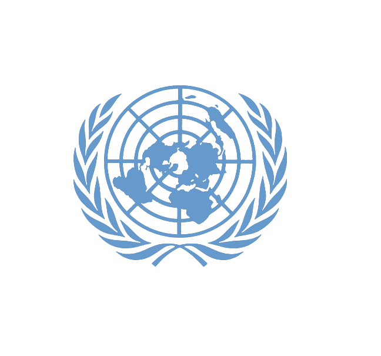

International Climate Diplomacy Support
8 years of end-to-end coordination connecting Qatari governmental entities with UNEP, UNFCCC, and FAO.

My role
As Program Specialist, I liaised with UNEP, UNFCCC, and FAO to compile statistical information for international reporting and co-authored periodic climate change and sustainability trend reports for Qatari governmental entities.
Key projects
COP26 (Glasgow), COP27 (Sharm El-Sheikh), COP28 (Dubai), and COP29 (Baku).
Stakeholders
UN agencies including UNEP, UNFCCC, FAO, and Qatari governmental entities.